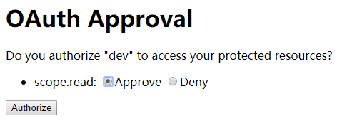

最常用的认证模式，支持refresh token。
请求流程如下：
通过浏览器访问以下地址时，首先判断该用户是否登录，如果已经登录，正常进入授权页面；如果未登录，会跳转至登录页面。
项目地址：http://localhost:8111/
请求地址：
点击测试
请求类型：GET
请求参数：
（1）response_type（必填）：固定值（code）
（2）client_id(必填）：客户端id
（3）redirect_uri（可选）：回调地址。如果有则必须和数据库中完全匹配；如果没有会自动根据数据库中地址进行回调
（4）scope（可选）：授权范围（与数据库scope匹配）
（5）state（可选）：你自己的自定义参数，会作为回调地址的参数，原样返回
当数据库字段autoapprove为true时，则该步骤自动跳过，即自动允许；
为false时，则需要用户手动授权。如下图：

同意授权：跳转到回调地址，带参数?code=m4Q8DZ&state=your_state
不同意授权：跳转到回调地址，带参数?error=access_denied&error_description=User denied access&state=your_state
请求参数：
（1）grant_type（必填）：固定值（authorization_code）
（2）client_id（必填）：client_id
（3）client_secret（必填）：client_secret（私密信息，本请求整体应在应用的后端请求，不经过浏览器）
（4）code（必填）：上一步获取的code
（5）redirect_uri（必填）：http://localhost:8111/login/code（必须和数据库中回调地址，完全匹配）
返回值：
{
"access_token": "7217d700-463a-4e8d-ab52-246e152e8627",
"token_type": "bearer",
"refresh_token": "897f9bf7-6a7b-4a18-bd0e-cfd2826915e5",
"expires_in": 3599,
"scope": "user_info"
}
未登录的情况下，授权会自动跳转登录页。
登录后，需要重新打开授权页面。
增加一个中间层，记录用户认证地址，如果跳转到登录页，登录之后，继续认证。
一般只有client是自己的应用时，才会使用。
因为该模式需要在客户端存储用户名和密码，存在风险。
请求流程如下：
（1）grant_type：固定值（password）
（2）username：必填 用户名 wkrj
（3）password：密码wkrj@123
（4）client_id：客户端id
（5）client_secret：客户端密钥
{
"access_token": "e361c0cd-dfb9-494d-9908-3175592ae94f",
"token_type": "bearer",
"expires_in": 3451,
"scope": "read"
}
减少code环节，直接携带access_token回调url（不支持Refresh token）
https://localhost:8111/oauth/authorize?response_type=token&client_id=dev&redirect_uri=http://localhost:8111/login/code&scope=read
请求参数：
（1）response_type（必填）：固定值（token）
（2）client_id（必填）：client_id
（3）redirect_uri（必填）：http://localhost:8111/login/code（必须和数据库中回调地址，完全匹配）
（4）scope（可选）：授权范围（与数据库scope匹配）
成功后回调：
http://localhost:8111/login/code?token=7217d700-463a-4e8d-ab52-246e152e8627
剩余步骤，和授权码模式相同
https://localhost:8111/token?grant_type=client_credentials&client_id=dev&client_secret=dev
请求参数：
（1）grant_type（必填）：固定值（client_credentials）
（2）client_id（必填）：client_id
（3）client_secret（必填）：client_secret
返回结果：access_token。
链接